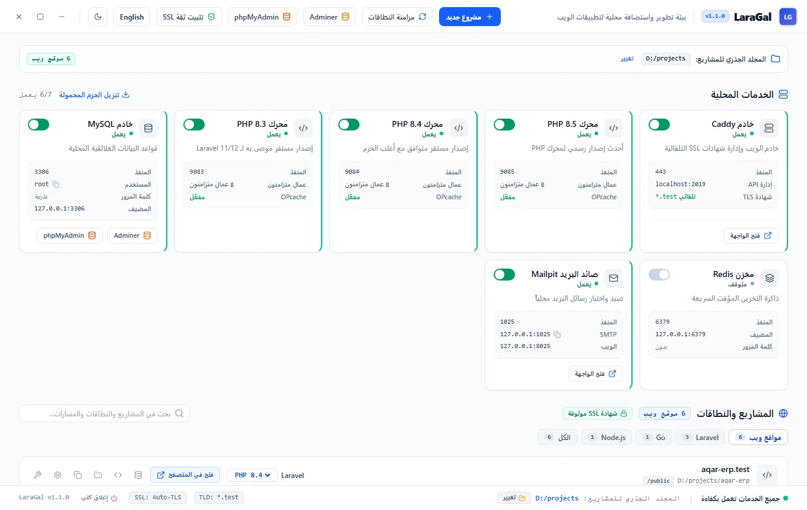
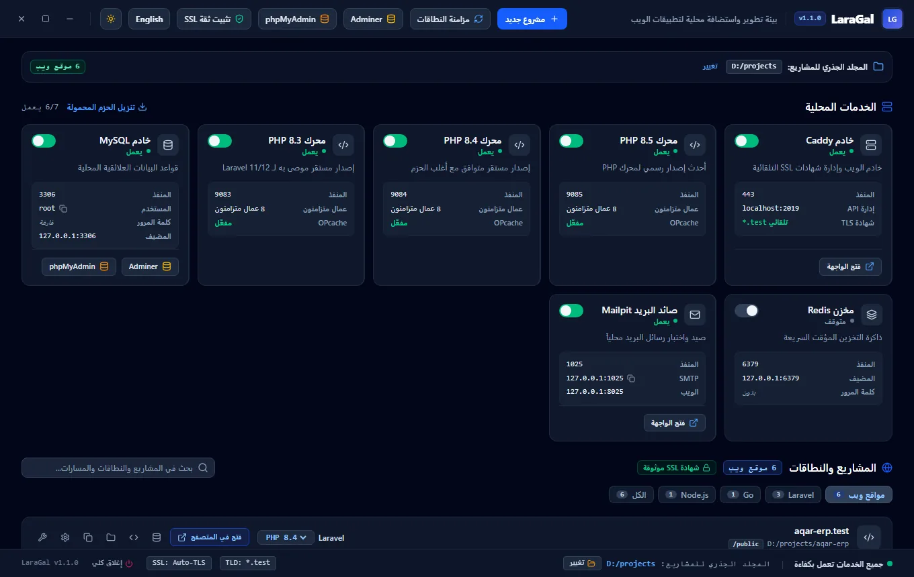

Caddy:443
خادم الويب والوكيل العكسي. يصدر شهادة لكل نطاق .test من جهة إصدار محلية، ويعيد تحميل الإعدادات عند إضافة مشروع دون إيقاف بقية المواقع.
يجمع LaraGal خادم Caddy بشهادات HTTPS محلية موثوقة، وعدة إصدارات PHP تعمل معًا، وقاعدة بيانات MariaDB وRedis وMailpit وphpMyAdmin في برنامج واحد. اختر مجلد مشاريعك، فيكتشفها ويعطي كل مشروع نطاقًا خاصًا به.


كل خدمة تعمل عملية مستقلة يراقبها البرنامج، ويمكنك تشغيلها وإيقافها من بطاقتها. السجلات تُحفظ في data\logs لكل خدمة على حدة.
خادم الويب والوكيل العكسي. يصدر شهادة لكل نطاق .test من جهة إصدار محلية، ويعيد تحميل الإعدادات عند إضافة مشروع دون إيقاف بقية المواقع.
كل إصدار على منفذ FastCGI خاص به مع OPcache، فيعمل مشروع على 8.3 وآخر على 8.5 في الوقت نفسه. تغيير الإصدار من قائمة المشروع.
قاعدة بيانات متوافقة مع MySQL، مقيّدة بالعنوان 127.0.0.1. يكتشف البرنامج ملفات .sql داخل المشروع ويستوردها، ويضبط ملف .env للاتصال بها.
أداتان لإدارة قواعد البيانات، تُفتح أيهما من بطاقة MySQL أو من رأس النافذة. زر قاعدة البيانات في صف المشروع يفتح قاعدته مباشرة في Adminer.
يلتقط كل بريد يرسله تطبيقك عبر SMTP ويعرضه في صندوق وارد محلي، فلا تصل رسائل الاختبار إلى أشخاص حقيقيين.
للتخزين المؤقت والطوابير والجلسات. متوقف افتراضيًا، ويُشغَّل بنقرة عند حاجة المشروع إليه.
يقرأ البرنامج ملفات كل مجلد داخل مجلد المشاريع، ويحدد طريقة تشغيله. مشاريع PHP تُخدم عبر FastCGI، والبقية عبر وكيل عكسي إلى منفذ التطبيق، أو تُخدم ملفاتها الثابتة مباشرة.
| النوع | علامات الاكتشاف | طريقة التشغيل |
|---|---|---|
| Laravel | artisancomposer.json | PHP FastCGI، والجذر مجلد public |
| WordPress | wp-config.phpwp-load.php | PHP FastCGI |
| PHP | index.php | PHP FastCGI |
| Go | go.mod | وكيل عكسي إلى منفذ التطبيق |
| Rust | Cargo.toml | وكيل عكسي |
| .NET | *.csprojProgram.cs | وكيل عكسي، والملفات الثابتة من wwwroot |
| Python | manage.pyrequirements.txt | وكيل عكسي |
| Ruby | Gemfileconfig.ru | وكيل عكسي |
| Java | pom.xmlbuild.gradle | وكيل عكسي |
| Node.js | package.json | ملفات dist أو build الثابتة، أو وكيل إلى خادم التطوير |
| Flutter Web | build/web/index.html | ملفات ثابتة |
لا يحتاج البرنامج مثبّتًا. فك الضغط في أي مجلد تملك صلاحية الكتابة فيه.
من صفحة الإصدارات على GitHub، ثم فك ضغط الملف.
يطلب صلاحيات المدير مرة واحدة لتعديل ملف hosts وتثبيت الشهادة المحلية.
مثل D:\projects. يظهر كل مشروع في القائمة بنطاقه ونوعه وإصدار PHP الخاص به.
مشروع في مجلد shop يفتح على https://shop.test بشهادة يثق بها المتصفح.
بيئة التطوير تعمل بصلاحيات عالية، لذلك نوضح كل تغيير بدقة.
إن لم تجد جوابك، افتح مسألة (Issue) في المستودع.
نعم للتطوير والاختبار والتعليم والاستخدام غير التجاري، وفق رخصة Business Source License 1.1. تقديمه منتجًا أو خدمة منافسة لطرف ثالث يحتاج رخصة تجارية. بعد أربع سنوات من كل إصدار تتحول رخصته إلى Apache 2.0.
لتعديل ملف hosts حتى تعمل نطاقات .test، ولتثبيت الشهادة المحلية في مخزن الشهادات الموثوقة.
نعم. كل إصدار يعمل على منفذ خاص به، وتختار إصدار كل مشروع من قائمته المنسدلة في صف المشروع.
في الغالب يفحص Windows Defender كل ملف PHP حين يُفتح أول مرة، وصفحة Laravel الأولى تفتح مئات الملفات. في قياس على جهاز بقرص NVMe استغرقت قراءة 800 ملف 14 ثانية، ونزلت إلى أقل من ثانية بعد الاستثناء.
شغّل في PowerShell بصلاحيات المدير، مع تعديل المسارات لتطابق جهازك:
Add-MpPreference -ExclusionPath 'D:\projects', 'D:\laragal\bin'الاستثناء يعني أن Defender لن يفحص هذه المجلدات، فاقصره على مجلدات تثق بمحتواها.
يعرض البرنامج تنبيهًا عند التشغيل إن وجد المنفذ محجوزًا. اعرف العملية بالأمر netstat -ano | findstr :443، وأوقف IIS أو أي خادم ويب آخر، ثم أعد تشغيل Caddy من بطاقته.
الإصدار الحالي لويندوز فقط. جزء من الشيفرة مكتوب بحيث يمكن نقله، لكن لا توجد نسخة جاهزة لأنظمة أخرى بعد.